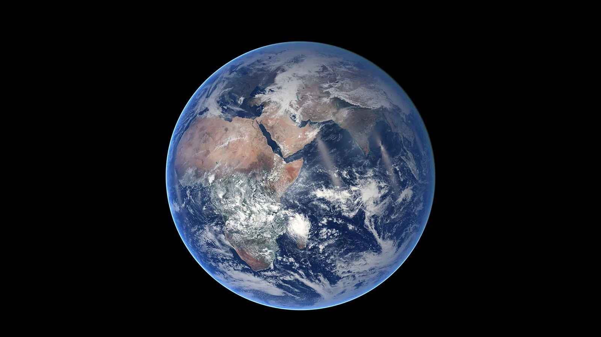
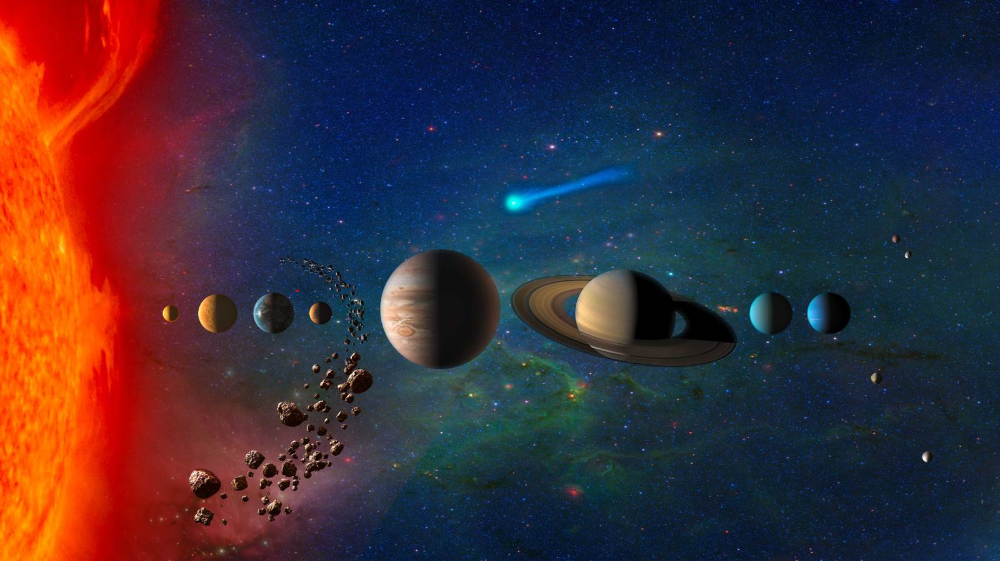
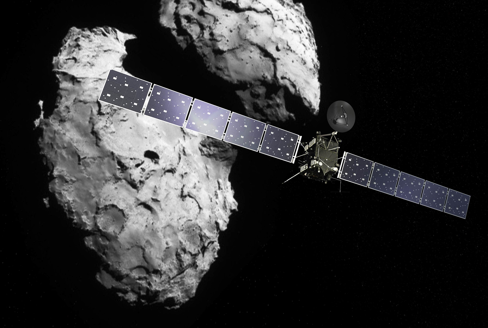
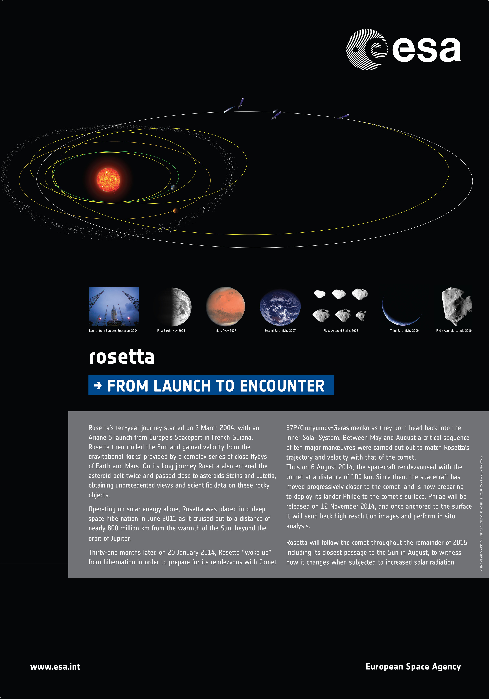

우주 탐사 · 중력 도움
플라이바이
중력을 이용하는
우주여행

01 · 도입
더 먼 곳으로 가는데, 더 빨리?
같은 속력이라면
먼 곳일수록 오래 걸림
하지만 우주에서는
이동 중 속력도 달라짐

02 · 추진제의 한계
중력을 이겨내려면 추진제가 필요하다
중력이 끌어당기는 동안
엔진은 계속 분사함
하지만 추진제는
한정되어 있음
다른 행성의 중력을
이용할 수는 없을까?
03 · 방법
플라이바이와 중력 도움
플라이바이
천체 가까이를 지나가는 비행
중력 도움 · Gravity Assist
천체의 중력을 이용해
탐사선의 궤도를 바꿈
가속 · 감속 · 방향 전환
04 · 원리
왜 통과한 뒤에 빨라질까?
행성 기준으로 보면
속력은 비슷하고
방향이 바뀜
태양 기준으로 보면
행성이 움직이므로
속력도 달라질 수 있음
그런데 왜 더 빨라질까?
같은 통과 · 같은 시간·거리 축척 · 화살표 길이는 속력에 비례함
04 · 원리
멀리 돌아가는 이유
속력을 높여
비행 시간을 줄이는 경로
시간이 더 걸려도
추진제를 아끼는 경로
임무마다 알맞은 경로가 다름
05 · 경로 설계
방향·거리·타이밍
방향
행성의 어느 쪽을 지나는가
거리
행성에 얼마나 가까이 가는가
타이밍
만날 때의 행성 위치에 맞춤
06 · 실제 사례
로제타 · 혜성 67P 탐사
혜성과 함께 움직이며
가까이서 관측하기
혜성에 맞춰
속력과 방향을 조절함
행성의 중력 + 엔진 사용

06 · 실제 사례
지구 3회 · 화성 1회의 중력 도움
- 지구 출발
- 지구 ①
- 화성
- 지구 ②
- 지구 ③
- 혜성 67P 도착

같은 행성을 다시 지나며
다음 구간의 궤도를 만듦
07 · 결론
가장 짧은 길이
항상 가장 좋은 길은 아니다
움직이는 행성의 중력을 이용해
속력과 방향을 바꾼다
FLYBY